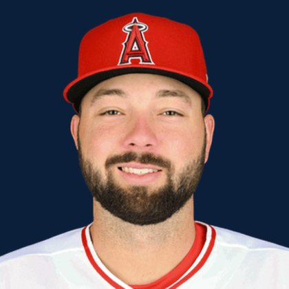

BASE KEEP
The Keep · The Diamond · The Farm
Player File · 1B LAA

Nolan Schanuel
#18 · 1B · Los Angeles Angels · age 24 · B/T LR · 6' 2" / 220 lbs · MLB debut 2023 · Boca Raton, USA
Keep avg280.0
# Boards3
BK Value488
Spread225–312
Hitting
| Year | G | AB | R | H | 2B | HR | RBI | SB | BB | SO | AVG | OBP | SLG | OPS |
|---|---|---|---|---|---|---|---|---|---|---|---|---|---|---|
| 2026 | 106 | 388 | 42 | 108 | 22 | 7 | 48 | 1 | 42 | 58 | .278 | .354 | .389 | .743 |
| 2025 | 132 | 488 | 64 | 129 | 23 | 12 | 53 | 5 | 59 | 71 | .264 | .353 | .389 | .742 |
The Keep#291BK 488
The Lineup#199BK 1,121
The Diamond#290BK 492
The 2026 line
Keep #291 · avg 280.0 · 3 boards · .278 / 7 HR / 1 SB / .743 OPS
Baseball Savant
Starcast · spray · pitch
Percentile ranks (Starcast) plus the official Savant spray chart for bats and pitch chart for arms. Open the full Baseball Savant page.
Batter · 2026
xwOBA
67
xBA
94
xSLG
45
xISO
16
xOBP
89
Barrels
9
Barrel %
8
EV
22
Max EV
24
Hard Hit %
20
K %
91
BB %
52
Whiff %
86
Chase %
66
Speed
12
Arm
18
OAA
89
Bat Speed
5
Squared Up
94
Swing Len
7
Hits spray chart
Minus
- Board spread 225–312 (87 ranks).
Board graph
Spread 225–312 · 3 sources
Every Board
Spread 225–312 · 3 sources
| Source | Rank |
|---|---|
| TDG Points | 225 |
| RotoGraphs Model | 303 |
| FantasyPros Dynasty ECR | 312 |
All players · The Keep · The Farm · The Diamond · BK News · The Lineup · Pitchers · Calculator